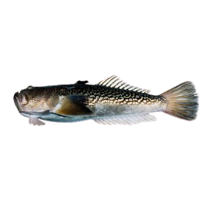

Животни (защитени)
Риби
Блеч

|
Разред: Селдообразни
Семейство: Селдови
Среща се в долното течение на реките Велека и
Резовска,
след
което се
връща обратно.
Необходими мерки за опазване
Пречистване на отпадачните води, вливащи се в
река
Велека
|
Кеслерово попче

|
Разред: Костурообразни
Семейство: Попчета
В р.Дунав и притоците й Вит, Янтра, Осъм и др.
Населява
крайбрежните езера, лиманите и долните течения на
реките,
вливащи се в северозападната част на Черно море.
Необходими мерки за опазване
Пречистване на отпадъчните индустриални и битови
води,
вливащи се в р.Дунав и притоците й
|
Змиорка

|
Разред: Змиоркообразни
Семейство: Змиоркови
Ареалът му обхваща крайбрежната зона на Европа от
Бяло
море
на
север до Средиземно и Черно море на юг.
На изток
достига
реките Волга, Северна Двина и долното течение на
Печора.
Навлиза в континенталните водоеми през
устията на
реките.
Необходими мерки за опазване
Въстановяване чистота на водите на крайморските
езера
и
реките във вътрешността на страната.
|
Шип
| 
|
Разред: Есетрообразни
Семейство: Есетрови
У нас се среща само в р.Дунав, където достига
обикновенно
до
Железни врати, рядко до Комарно.
Разпространен е
в
Черно,
Каспийско и Аралско море.
Необходими мерки за опазване
Забранява се улова на този вид риба
|
Деветигла бодливка
 |
Разред: Бодливкообразни
Семейство: Бодливки
В миналото изобилен в дунавскитеблата, дунавската
делта и
в
крайбрежните слабо солени черноморски езера. Преди
околко 30
години вече малоброен, но обитаващ всички български
черноморски
езера. След 1970г. отбелязван единично в р. Камчия.
Вероятно
все
още запазен в някои от черноморските езера –
Дуранкулашкото,
Шабленското и в крайдунавските водоеми.
Понто-каспийски
реликт.
Необходими мерки за опазване
Предотвратяване замърсяването на долните течеия
на
черноморските реки.Обявяването на долното
течение на
р.Камчия за резерват.
|
Други защитени
Обикновен делфин

|
Разред: Китоподобни
Дължината на тялото му достига до 2.6м,а
теглото-до 136кг. Окраската на тялото варира
в различните области на разпространение.
Обикновено гърбът е черен, тъмно кафяв или
син, а коремът — бял. Отстрани на тялото има
по две светли петна. Във всяка горна и долна
челюст има по 40 – 60 конусовидни зъба.
Широко разпространен в Атлантическия, Тихия
и Индийския океан, Средиземно, Черно и
Червено море. В Черно море извършва сезонни
миграции в търсене на храна. През
пролетно-летния сезон пребивава в северните,
а през зимния – в южните райони.
|
Шипобедрена костенурка

|
Шипобедрената костенурка достига до 7 kg тегло (най-голямата регистрирана шипобедрена костенурка е уловена в България).
Шипобедрената костенурка е активна през деня. Храни се главно с трева и паднали горски плодове, рядко с безгръбначни.
Предпочита тревисти терени, за разлика от шипоопашатата костенурка, която е типична за редките гори.
|
|